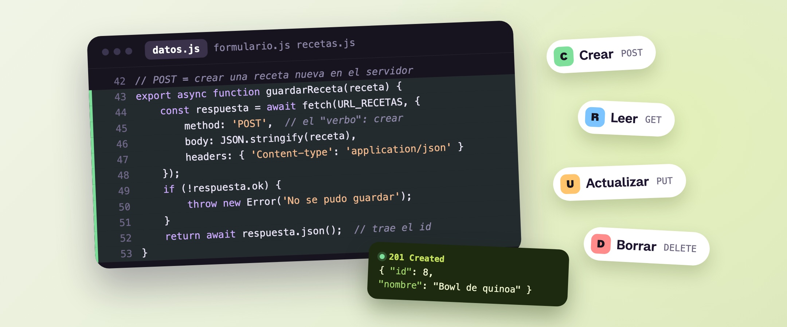
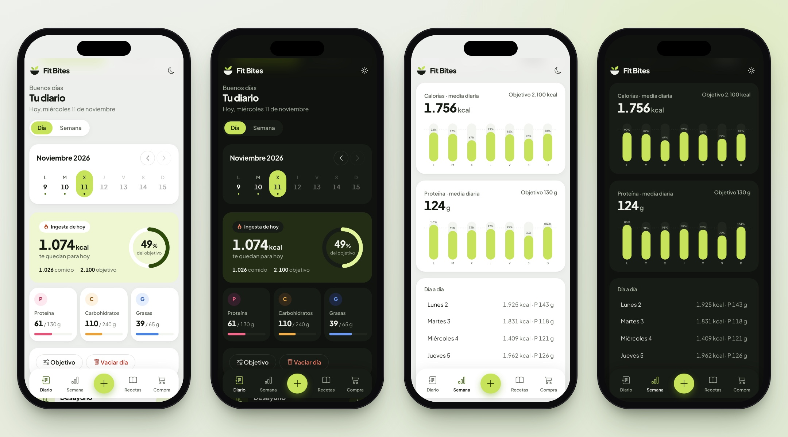
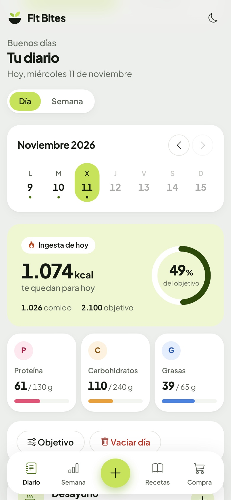
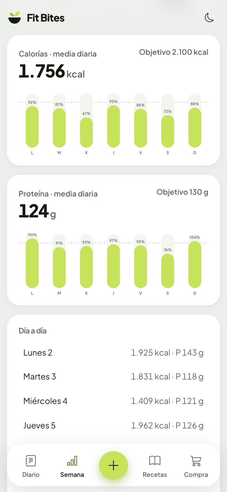
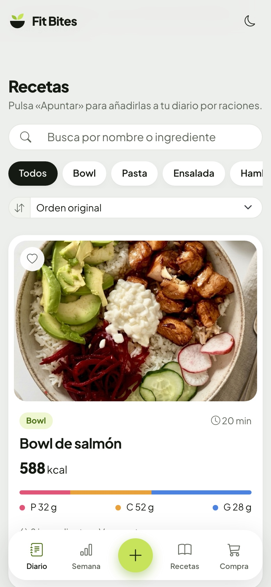

ProyectosFit Bites
Web app · proyecto de aprendizaje
Fit Bites
Una web app para apuntar lo que comes y ver al momento tus calorías, proteína, carbohidratos y grasas. La construí mientras hacía un curso de desarrollo fullstack, para aprender a fondo el CRUD: crear, leer, editar y borrar datos.

Contexto y objetivos
Contexto
Fit Bites es el proyecto con el que aprendí el CRUD mientras hacía un curso de desarrollo fullstack: manejar los datos de una aplicación real, y no los de un ejercicio suelto. El tema es la comida y sus macros, un terreno con datos de sobra con los que practicar.
Empezó siendo una lista de recetas con calorías y macros, y fue creciendo hasta convertirse en un diario completo por comidas, con vista semanal, lista de la compra y modo oscuro.
Objetivos
Entender el CRUD: pedir y enviar datos con fetch y los métodos GET, POST, PUT y DELETE contra una API REST.
Aprender JavaScript de verdad: módulos, async/await, localStorage y pintar la interfaz a partir de los datos.
Que se sintiera como una app: diseño responsive, modo claro y oscuro, y que se pueda instalar en el móvil.
Mi papel
- Diseño de interfaz
- Desarrollo front-end
- CRUD y datos
Proyecto propio de aprendizaje, hecho con HTML, CSS y JavaScript (módulos), Bootstrap 5, json-server, Firebase, app instalable (PWA) y GitHub Pages.
El CRUD, paso a paso
Las recetas son el corazón del CRUD. Viven en una API REST de pruebas (json-server) y la web habla con ella usando fetch y async/await. Cada letra de CRUD es un verbo HTTP distinto, y cada uno tiene su propia función en datos.js.
-
POST Create
Crear una receta
El formulario recoge nombre, tipo, ingredientes, macros y foto. La función convierte la receta en texto JSON y la envía; el servidor le pone el
idy la devuelve.export async function guardarReceta(receta) { const respuesta = await fetch(URL_RECETAS, { method: 'POST', body: JSON.stringify(receta), headers: { 'Content-type': 'application/json' } }); if (!respuesta.ok) throw new Error('No se pudo guardar'); return await respuesta.json(); // trae el id nuevo } -
GET Read
Leer las recetas
Al abrir la web pide la lista. Si el servidor responde, se puede editar; si está apagado, el
catchlo recoge y la web lee el archivorecetas.jsonen modo lectura.export async function cargarRecetas() { if (EN_LOCAL) { try { const respuesta = await fetch(URL_RECETAS); if (respuesta.ok) { estado.modoLectura = false; return await respuesta.json(); } } catch (error) { /* json-server apagado */ } } estado.modoLectura = true; const respuesta = await fetch(ARCHIVO_RECETAS); return (await respuesta.json()).recetas; } -
PUT Update
Editar una receta
Es el mismo formulario que para crear, pero con los datos ya rellenos. La dirección lleva el
idde la receta y se envía la receta completa con los cambios.export async function actualizarReceta(receta) { const respuesta = await fetch(URL_RECETAS + receta.id, { method: 'PUT', body: JSON.stringify(receta), headers: { 'Content-type': 'application/json' } }); if (!respuesta.ok) throw new Error('No se pudo actualizar'); return await respuesta.json(); } -
DELETE Delete
Borrar una receta
Antes de borrar se abre una ventana de confirmación. Lo que ya apuntaste en el diario no cambia: cada línea guarda su propia copia de los valores.
export async function borrarReceta(id) { const respuesta = await fetch(URL_RECETAS + id, { method: 'DELETE' }); if (!respuesta.ok) throw new Error('No se pudo borrar'); }
Código simplificado: en el proyecto cada línea lleva un comentario que explica qué hace.
El esqueleto, por dentro
Fit Bites nació como una herramienta para aprender el CRUD, así que lo más honesto es enseñar cómo está hecha. Aquí tienes su código real: el HTML, el CSS y los archivos de JavaScript que forman el núcleo, tal como los escribí, con mis comentarios de línea. Con las etiquetas C · R · U · D se iluminan las líneas que crean, leen, actualizan y borran; y con el interruptor puedes ver solo el código.
Un código, dos modos
En GitHub Pages no hay json-server, así que la misma web detecta dónde está abierta (EN_LOCAL) y se adapta. Así se puede publicar la app y seguir practicando el CRUD completo en el ordenador.
| En mi ordenador | Publicada (GitHub Pages) | |
|---|---|---|
| De dónde salen las recetas | json-server (API REST) | archivo json/recetas.json |
| Crear, editar y borrar | Sí: POST, PUT y DELETE | No: modo lectura |
| Botones de editar | Activos | Desactivados |
| Diario, objetivo y compra | Igual en los dos: se guardan en el navegador | |
| Service worker (offline) | No se registra, para no estorbar | Sí: la app se abre sin internet |
Dónde vive cada dato
Lo que pertenece a la app (recetas y alimentos) y lo que pertenece a cada persona (su diario) se tratan distinto. Lo personal pasa siempre por un único módulo, almacen.js, y nunca se toca localStorage desde otro sitio.
| Dato | Dónde | Detalle |
|---|---|---|
| Recetas | json-server o recetas.json | Es lo único con CRUD completo. |
| Alimentos | alimentos.json | Unos 60, por 100 g en crudo. Solo lectura. |
| Diario | localStorage | Los últimos 120 días, por comidas. Cada línea guarda una copia de sus valores. |
| Objetivo, favoritas, compra y alimentos propios | localStorage | Se leen y guardan con JSON.parse y JSON.stringify. |
| Tema claro u oscuro | localStorage | Solo en ese navegador. |
| Nube (opcional) | Firebase | Authentication y Firestore para sincronizar entre dispositivos. El código está hecho; en la versión publicada aún no está activado. |
Modo claro y oscuro
Todos los colores de la interfaz son variables CSS. El tema oscuro no es otro diseño: es la misma hoja de estilos con los valores cambiados, activada con un atributo en <html>.
Se decide antes de pintar. Un pequeño script en la cabecera lee la elección guardada, o el modo del sistema (
prefers-color-scheme), y pone el atributo antes de que se vea nada. Así no hay parpadeo blanco.El botón solo cambia el atributo.
aplicarTema()ponedata-bs-themeen<html>, cambia el icono (luna o sol), actualiza el texto para lectores de pantalla y guarda la elección.Contraste cuidado en los dos. El verde de los textos pasa a lima claro en oscuro, y la tarjeta destacada y los fondos de las macros se oscurecen para que todo se siga leyendo bien.
| Variable | Claro | Oscuro |
|---|---|---|
--fondo | #EDEFEC | #0F120E |
--superficie | #FFFFFF | #181C16 |
--texto | #151A12 | #EEF2EA |
--verde (textos de color) | #4A7012 | #B9D85E |
--lima (acento) | #C6E35B, el mismo en los dos temas | |

Pantallas



El código en módulos
Sin frameworks: JavaScript puro dividido en módulos ES (import y export). Cada archivo atiende una zona y lo único compartido, las recetas cargadas, vive en estado.js.
| Archivo | Qué hace |
|---|---|
app.js | Punto de entrada: arranca cada parte. |
datos.js | El CRUD: fetch con GET, POST, PUT y DELETE. |
almacen.js | Todo lo personal: localStorage y, si hay cuenta, la nube. |
dia.js | Diario por comidas, vista semanal y gráficos SVG. |
recetas.js, detalle.js, formulario.js | Tarjetas, filtros, raciones y el formulario de crear y editar. |
compra.js | Lista de la compra. |
interfaz.js | Tema claro u oscuro y barra de pestañas del móvil. |
sw.js | Service worker: copia para usar la app sin internet. |